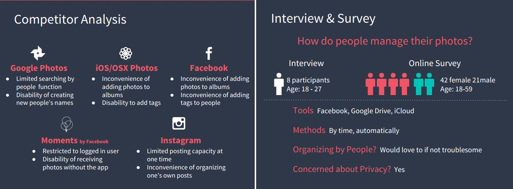

Design of Foto: the Photo Management App

We designed an application that uses facial recognition technology to easily manage photos by automatically tagging people in the photos. Each time on detecting a new unnamed face, the app will remind the user to name the person and the app will learn it ever since.
Research
We did interviews and online questionnaire survey on about 70 people aged 18-59. We tried to learn people’s habit of managing and sharing photos. I was responsible for designing the questionnaire. And we also did competitor analysis on 5 photo-related popular apps. Each one of the team picked one app to analyze.
Strategy Discussion
We extracted the users’ needs and pain points of managing photos and applying the method of affinity diagram. We also created 3 personas to help summarized the problems.

Initial Sketching
We started our design with each one drawing out his/her ideas.
Iteration Design
Low-fidelity prototypes
We did 5 rounds of design->prototype->testing in this project.
We started with a low-fidelity prototype and test it by interviews. I used Marvel and Pop to make the paper prototype able to work on phones.

Medium-fidelity prototypes
Then we adjusted the prototype based on users’ feedbacks of the last round and made another 2 rounds of mid-fidelity prototypes, each followed with a usability testing. At first, it was hard for us to cooperate on making prototypes. After times of practice, we learned how to unify the methods we use and were able to divide the task that each of us would make some contributions. I was responsible for the part of choosing and showing photos.
For usability testings, we used usertesting.com to do remote testings. We designed the testing tasks and questions and post it on the website. After the testing was done, we collected the record and analyze the participant’s performance. I was responsible for analyzing 2 of the participants, gather the overall results and visualize them.

High-fidelity prototypes
In the last 2 rounds were made high-fidelity prototypes.

During the 5 rounds of usability testings, we could see that the results had been continuously improving.